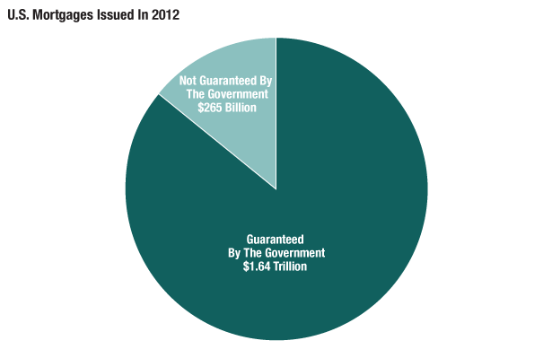
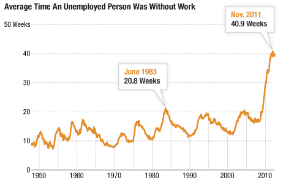
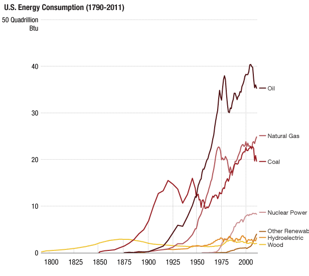
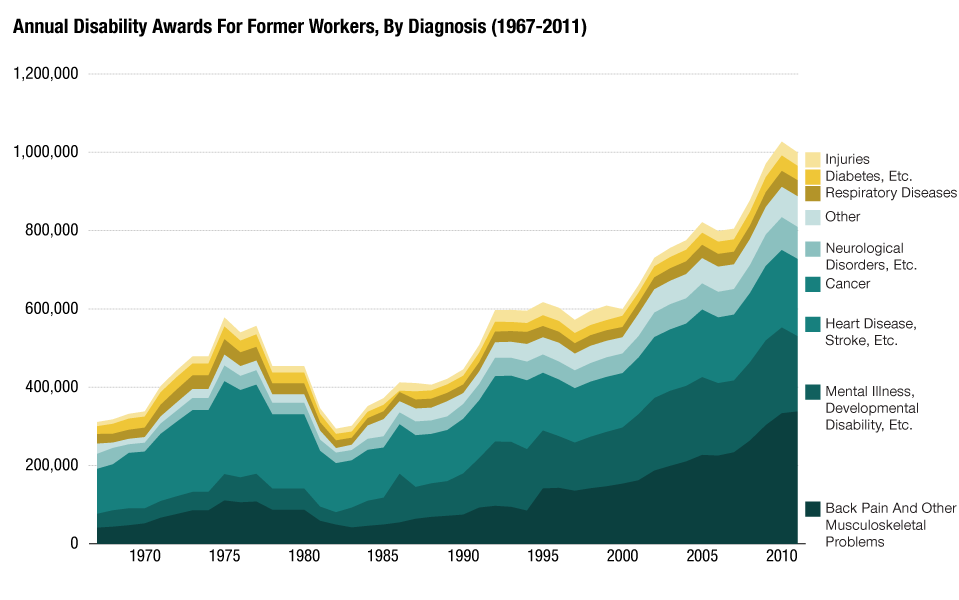
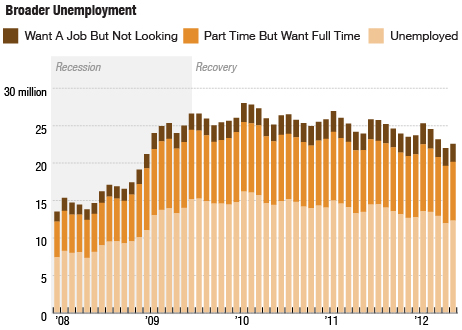
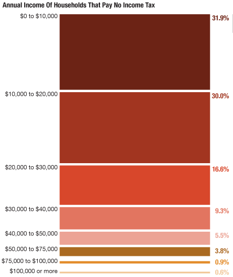

Lessons
Lesson 1
In this lesson we covered broadly how the Internet works, what each coding language does and how servers work. We learned how to put together a rough web site and how to upload it to a server using an FTP client.
Below are some of the materials we used:
- slides from class
- The sample folder structure and HTML files with annotated comments
- The "GAHHH?! What should I do?"-flowchart for aspiring multi-platform journalists
- instructions for creating a basic HTML file
- instructions for uploading files to FTP
For inspiration, some great examples of storytelling through slideshows:
- Photographer as Witness: A Portrait of Domestic Violence - LightBox (Every single word of captions essential here)
- Wandering in Japan's Suicide Forest
- An Ambush and a Comrade Lost (narrative w/ audio)
- W. Eugene Smith's Landmark Photo Essay "Country Doctor" (a classic)
- Todd Heisler's Final Salute
- Below the Line: Portraits of American Poverty (captions are important here)
- A Light on the People of Western Sahara
- Dhruv Malhotra's "Sleepers"
- Ed Ou's "Under a Nuclear Cloud"
Lesson 2
In this lesson we covered how to shoot photographs, how to build a slideshow using bootstraps and how to process photos in Photoshop.
Below are some of the materials we used:
- slides from class
- sample folder structure and HTML file for a slideshow
- sample photos for cropping
Lesson 3
In this lesson we covered basics of understanding how data is used in journalism, what formats are out there and what to consider when doing data stories.
Below are some of the materials we used:
- slides from class (introduction to data in journalism)
- The slides from data sourcing and processing exercise
- The walk-through handout for data sourcing and cleaning
- The data tools presentation (first half)
- The some pointers to data sources
Lesson 4
In this lesson we data formatting and data visualization.
Below are some of the materials we used:
Charts and Graphs
The most important part to making a chart is getting great data that shows changes over time, reveals patterns over time or helps understand the relationship between one data set and another. Without interesting data your graph or chart won't contain a good story.
Pie Charts and Donut Charts
Pie charts and donut charts are great in showing proportions of categories within a whole. They are particularly effective when used with simple and straightforward data sets.

Source: Inside Mortgage Finance
Be wary, however, of visualizing a complicated data set. Once you try to visualize more than five different categories within a pie chart or donut chart you run the risk of confusing your viewer and muddying your message.
This means that at times you might have to consolidate data to build an effective pie chart or donut chart. Or it could mean that you need to find a different way to visualize your data.
Line Graphs
Line graphs are great in representing trends or interesting occurrences within a data set over time. The key here is that you can plot changes, patterns or unusual events over time. This line chart shows how much longer people are out of work than they have been previously:

Source: Bureau of Labor Statistics
Another way to use line graphs is to show change within different categories over time. This example about energy uses over time shows us how much our energy consumption has increased and how much it was diversified as well:

Source: Bureau of Labor Statistics
Area graphs
Area graphs show trends over time for data that are part of a whole. In some ways you could think of it as having the same function as a pie chart (showing proportions) but over time. This area graph shows the growth in disability awards over time by category

Source: Social Security Administration
Column Graphs and Stacked Column Graphs
Column graphs are similar to line charts - they have the ability to plot values over time. But they are sometimes a better choice when you only have a sparse data set (yearly data instead of monthly data for a 4 year time span, for example). To plot a line chart with that sparse a data set can seem misleading - a line can sometimes lead people to think of trends within a data set when a column graph can seem as if it shows the yearly data in isolation.

Source: Bureau of Labor Statistics
Stacked column graphs are similar to area graphs - they can show proportions within a whole over time.

Source: Census Bureau
They can be a good alternative to a pie chart - especially if you have more categories than would be good to show in a pie chart.

Source: Bureau of Labor Statistics
Bar Charts and Stacked Bar Charts
Bar charts are very similar to column graphs, they just face a different direction (column graphs are vertical, bar charts horizontal). They can display values of different categories and are also a good alternative to a pie chart if your data gets complicated.
One nifty way in which they are slightly different though is that you can use them to rank information. This chart here shows not just how many billions in treasury bonds each country held, but it also ranks them by how much they hold. This creates a clear hierarchy between those countries, an important piece of information when trying to understand who holds American debt:

Source: Department of the Treasury/Federal Reserve Board